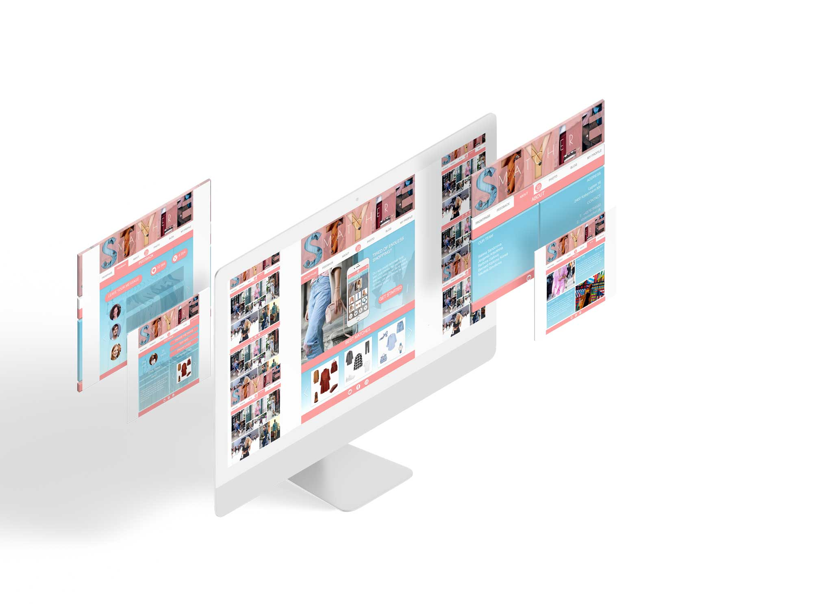
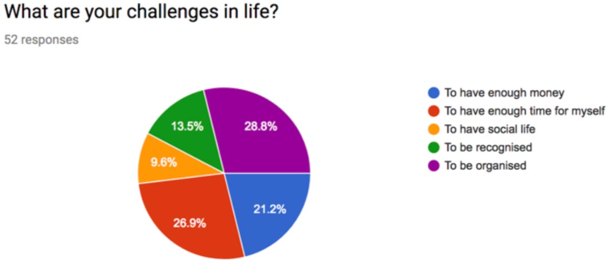
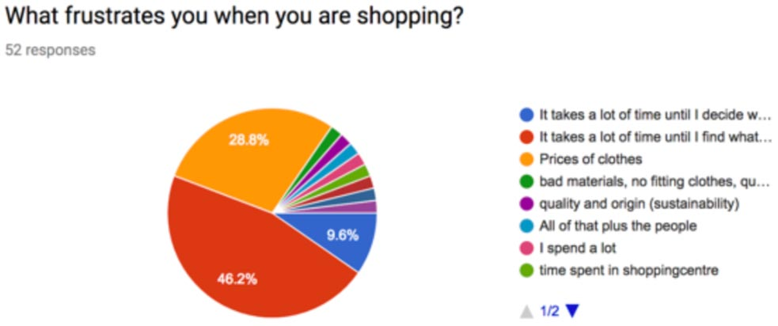
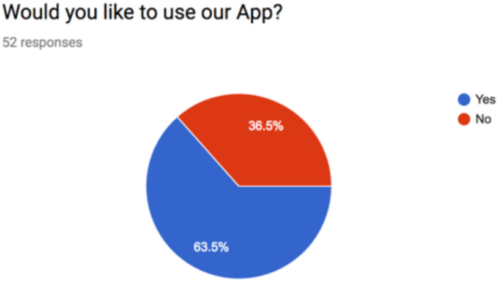
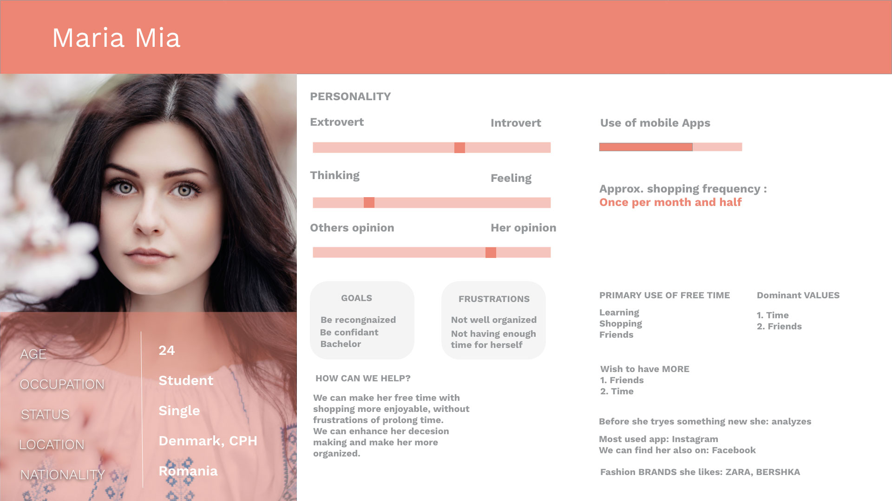
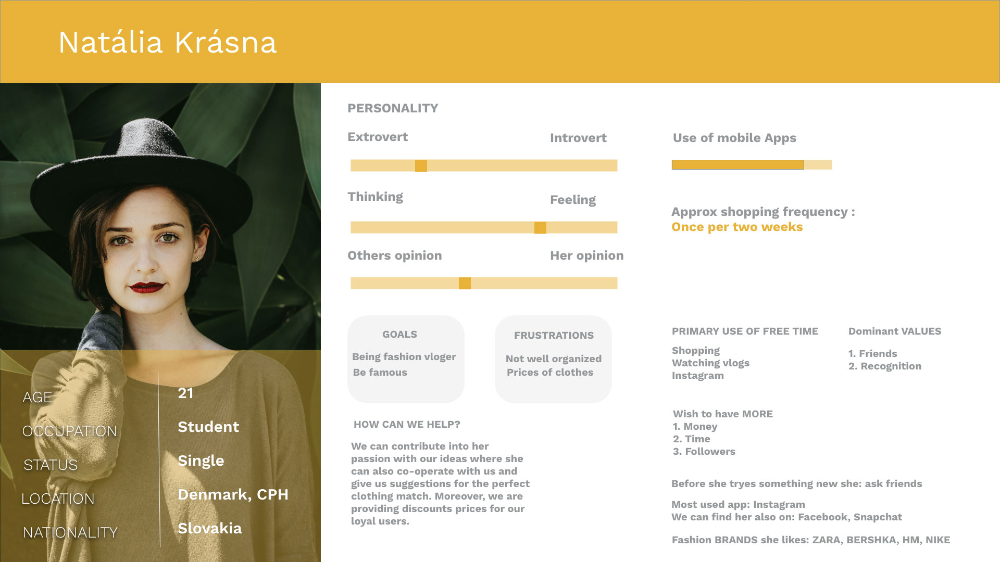
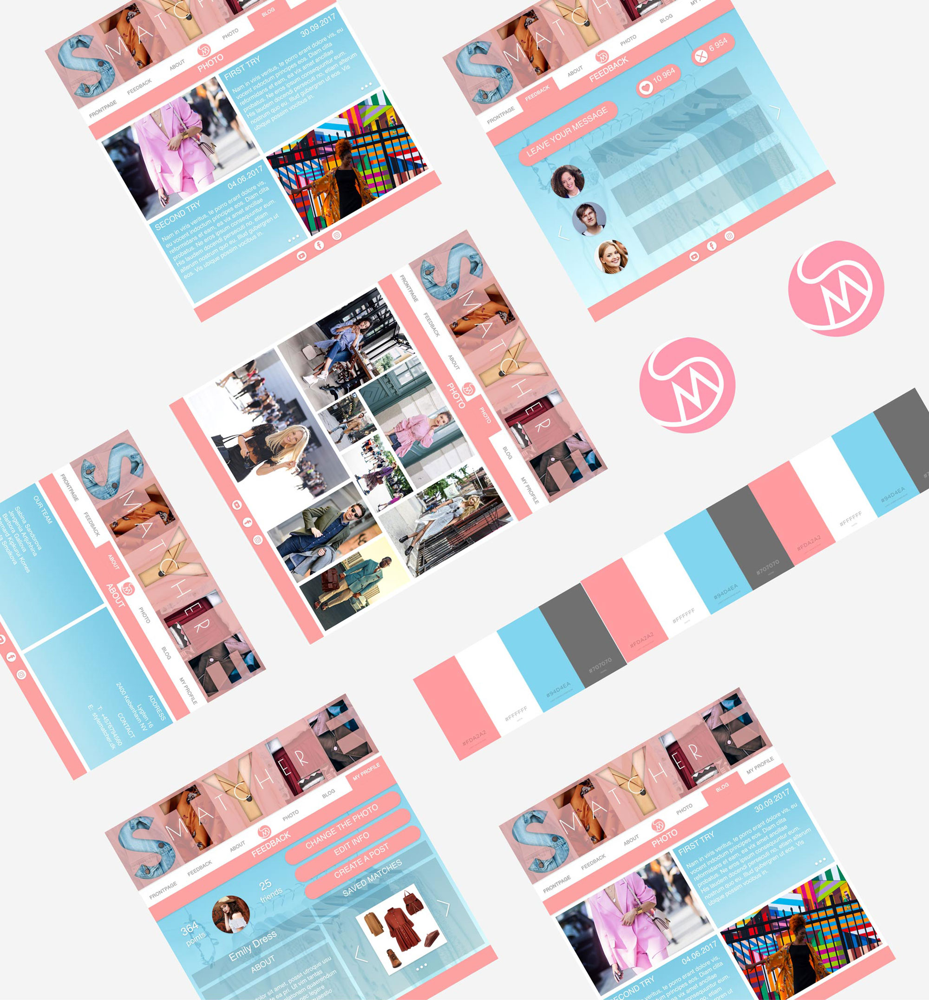
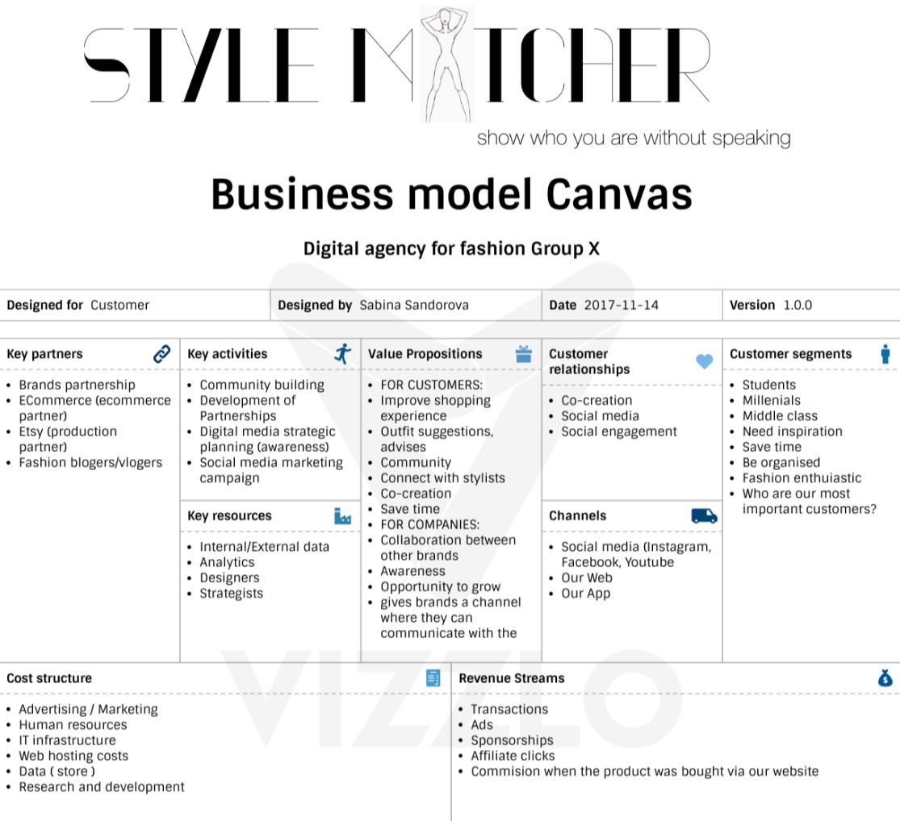
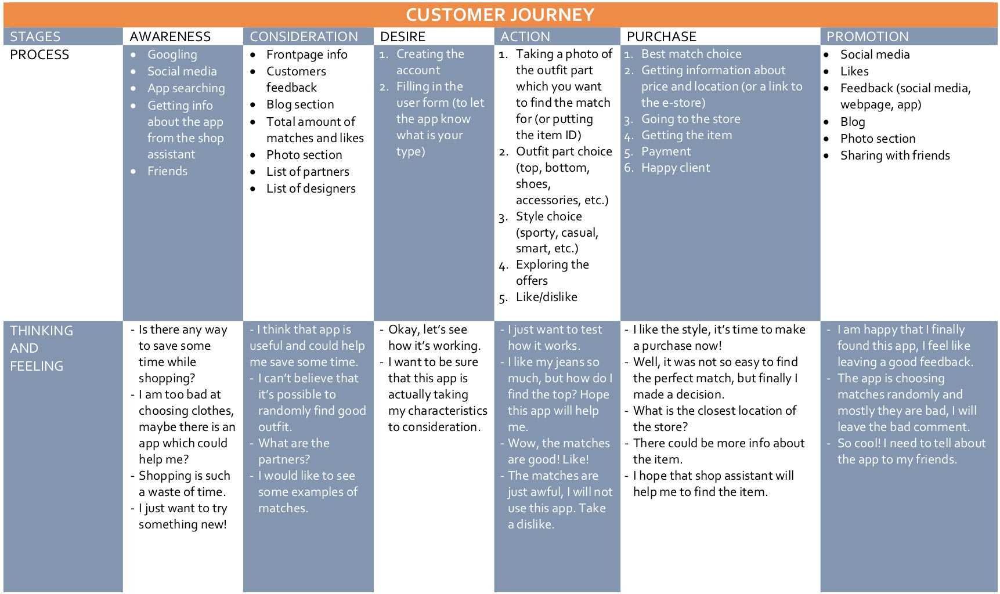
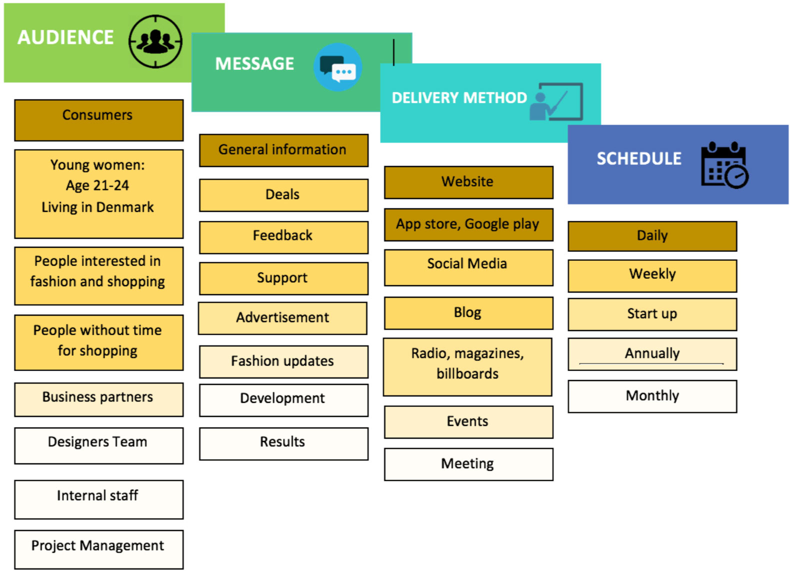

Task
The task was to create and programme the homepage of my team’s digital company, where we present what the company stands for, what their mission is and what they offer. The digital service is going to be shortly described/marketed on the corporate site.
Another part of the task was to apply UX design to the whole process and try to figure out how we optimize the User Experience of our site - as well as our digital service.
Our digital service was developed as an app. We were not required to programme our digital service prototype, but we should conceptualize it using Adobe XD in order to present the general idea /functionality of our digital service.

Process
Week 1: With my group we made ideation, research and discusion of our concept for a digital service and the company behind it. We tried to focus on the market trends, technologies, competitors and digital tendencies.
According to our research the fashion industry is worth $2.4 trillion and it would be the world’s seventh-largest economy if ranked alongside individual countries’ GDP. These facts have shown us, that the fashion industry is a prosper business and therefore the right opportunity for our team to practise our business knowledge and ideas.
After our decision on which business industry to focus on, we decided to do the observations and survey in order to have a valid problem we can solve and relevant personas for our idea.
Observation
We used qualitative and quantitative methods of data collection. The major project tools used to collect primary data were an observation, Service Safari technique and group constructed survey. For the secondary data collection we used the Internet websites focused on fashion industry and consumer’s behaviour.
The main problems which we found out with our observation was time inefficiency, while shopping because of many options of products. Consumers buy more when they are experiencing good experience. Time inefficiency increases stress, frustration and so lower the possibility of purchase.
After our findings we were asking. Do the people search for our solution? Is it what they want and really need? For these questions, conducted the survey to see if our idea is relevant. I am going to present the charts which were crucial for our idea.

Interpretation: As we see in the paragraph their main challenges in life are not having enough time and troubles with organization which is exactly what we thought and are our problem to solve.

Interpretation: We can see that the time inefficiency is the biggest issue.

Interpretation: Before this question we described our app in more detailed way and the responses changed for positive result from which we are ready to start to develop our idea further.
Personas
From the Survey and observation, we were able to create our personas.


OUR RESEARCH QUESTION
How can we reduce negative effects of shopping?
Definition of the problem
Fascination with shopping have created unhealthy effects on consumers’ lives such as frustration and stress. The average woman makes 301 trips to the store annually, spending 400 hours a year shopping.
It is not just time ineffective. The real problem occurs, when consumers who are ready to make their purchase go to the store without any investment, because of their overwhelming.
The options of clothes are endless and the shopping is becoming time inefficient, tiring and frustrating and hence the experience from it is not motivating to experience.
Our Solution
The idea of the app Style Matcher is to match particular item with other clothes and to show the location of stores where it’s possible to find and buy it. Our aim is to make shopping for our users faster and more pleasant. Our next goal to create popular social network of our app with blogs, score and most popular users to make people interact, share their style, find new friends and inspiration. There are some shops that can match clothes, but it’s only possible with one brand.
Our app is unique, because it can combine different stores, which gives more opportunities for making your style more interesting. In addition, our app will contain the user profile, where it will be possible to choose your personal charasteristics and to define the budget.
Behind the mockups, logo and colors
The logo design is a combination of a two letters S and M representing the app’s initials “style matchers”. The letter’ S’ has been intentionally designed to appear as encircling the globe, representing the global borderless appeal. Our goal with the App is to be used across borders. Its reach will eventually “limitless”.
The globe appears dynamic, representing changing trends in fashion. The color pink has been prominently used as representation of our target users- young , cool and trendy, girl who is keen on donning the very best.

Business and Concept development
In this part we got deeper into the business and concept development process. We worked on developing the idea further and turn it into a profitable concept and business model.



In the end
We believe that by all these features which can the App Style matcher provide, we can reduce the negative effects of shopping and hence motivate people to shop more. When people will know where to find what they want, they will be more organized which can solve the problems we have found. It all comes to good experience from shopping. We believe, that positive experience is what people motivate to do shopping more often. Stress will replace enjoyment.